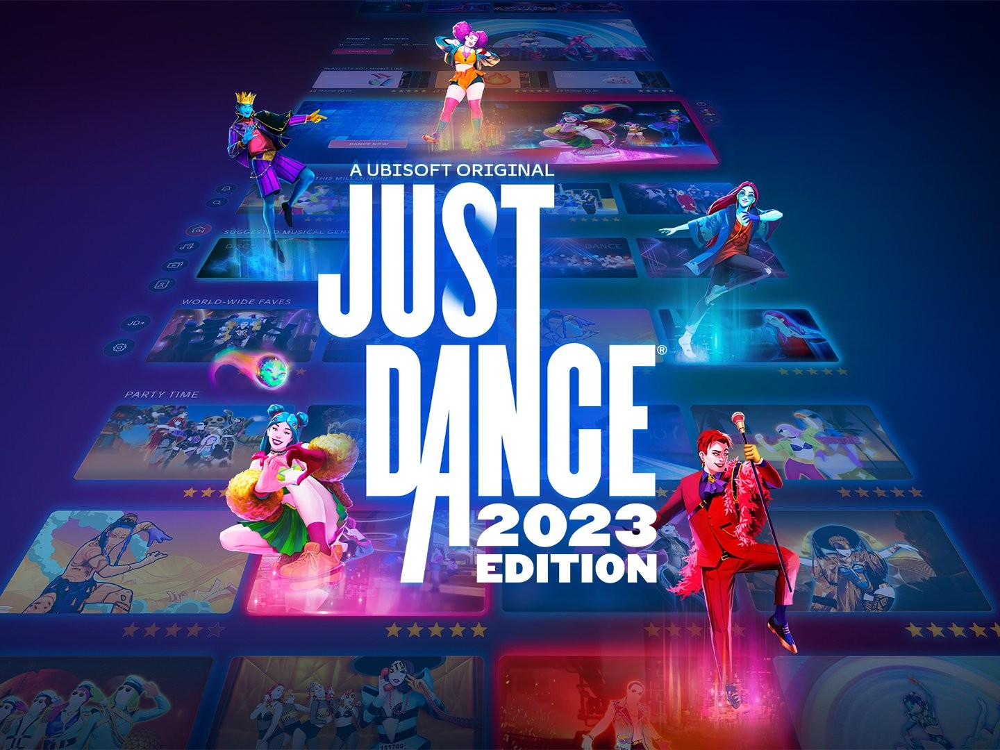
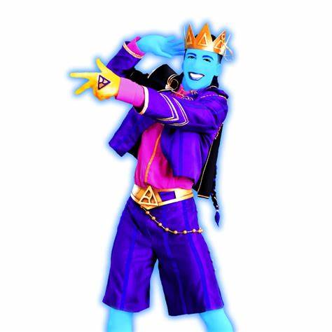
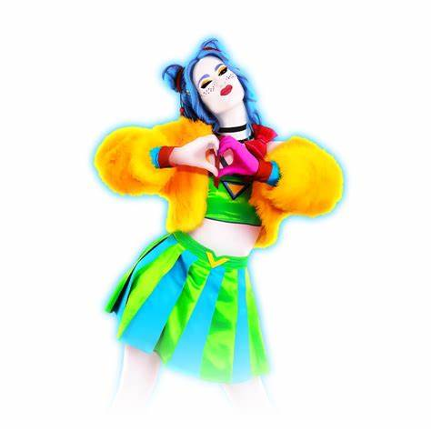
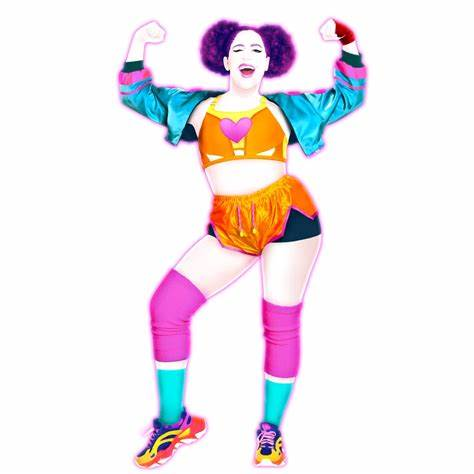
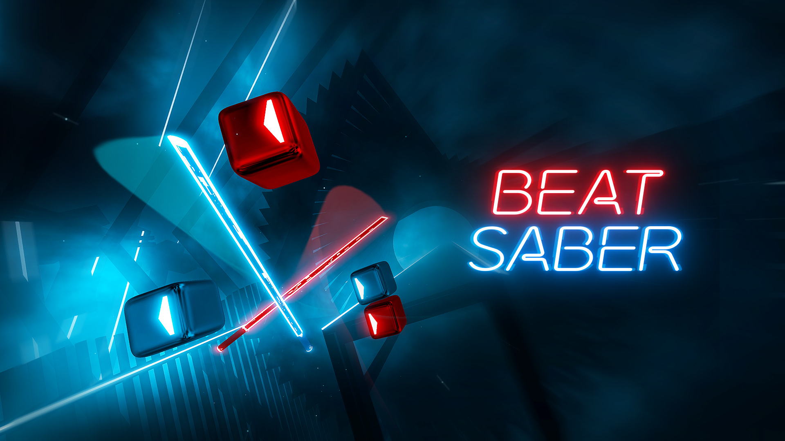
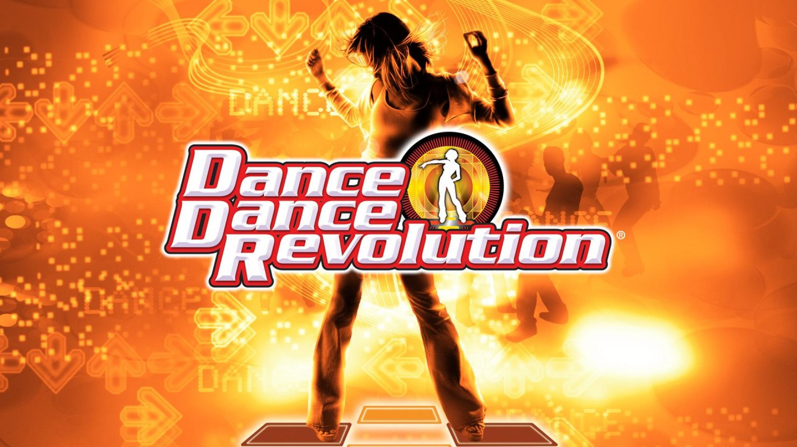

RHYTHM AND DANCE GAMES
Popular Rhythm and Dance Games

Just Dance
"Just Dance" is a popular rhythm-based dance video game series developed by Ubisoft, where players are encouraged to
mimic the on-screen choreography performed by virtual dancers to a wide range of popular songs. Using motion detection
technology through devices such as smartphones, motion controllers, or cameras, the game tracks the players' movements
and scores them based on accuracy, timing, and performance. With vibrant visuals, energetic music, and engaging
routines, "Just Dance" provides an entertaining and interactive experience for individuals or groups, promoting both fun
and physical activity.
Game Mechanics:
Just Dance features intuitive and engaging game mechanics that revolve around motion tracking and rhythm-based
performance. Players are required to mimic the dance moves of on-screen characters in time with popular songs, using
motion-sensing technology such as smartphones (via the Just Dance app), Kinect sensors, PlayStation Cameras, or Nintendo
Joy-Con controllers. The game analyzes the player’s movements based on accuracy, timing, and positioning. As players
dance, they receive real-time feedback in the form of ratings like “OK,” “Good,” “Perfect,” or “Super,” depending on how
closely their movements match the choreography. Consistently accurate moves build combos and streaks, helping players
increase their overall score. At the end of each performance, players are awarded a final score and can earn stars or
ranks based on their performance. These mechanics create an energetic and competitive environment, encouraging players
to improve their skills while enjoying physical activity.
Characters:

Wanderlust
Mentor-like figure
A mysterious figure who guides players through the Danceverses.

Sara
The new heroine and central character
A regular dancer from the real world who is pulled into the Danceverses. Her growth as a performer and leader is a key focus of the story. She represents the player's journey and stands as the story’s emotional anchor.

Brezziana
Energetic and passionate dancer
Known for her fiery personality and bold dance style. She brings energy and courage to the team and plays an important role in rallying others during tough situations.
Game Tournaments:
The Just Dance World Cup, organized by Ubisoft, has evolved over the years to become a significant event in the competitive Just Dance scene. Initially partnered with the Electronic Sports World Cup (ESWC), it marked Just Dance's entry into the esports landscape. The tournament typically involves online qualifiers where players from numerous countries participate to showcase their skills.

Beat Saber
Beat Saber is a virtual reality (VR) rhythm game developed by Beat Games, a Czech studio now part of Oculus Studios.
Released in 2019, the game is available on platforms such as Meta Quest, PlayStation VR, and PC VR systems. In Beat
Saber, players wield two glowing sabers—typically red and blue—to slice through oncoming blocks that represent musical
beats. These blocks are arranged in sync with the rhythm of various songs, creating an immersive and energetic
experience. The game's neon-lit environments and dynamic visuals enhance the futuristic atmosphere, making it both a
musical and physical challenge.
Game Mechanics:
Beat Saber features immersive and fast-paced rhythm-based gameplay that requires players to use two virtual sabers to
slice through blocks that approach in sync with the music. Each block is color-coded and marked with an arrow indicating
the direction it should be cut. Players must move their arms precisely and rhythmically to match the beat, scoring
points based on the accuracy, angle, and timing of each slice. In addition to slicing blocks, players must also dodge
obstacles such as walls and avoid hitting red “bomb” blocks, as mistakes decrease the energy bar. If this bar is
completely drained, the level ends in failure. The game offers multiple difficulty levels—from Easy to Expert+—along
with different modes including Solo, Campaign, Multiplayer, Party, and Practice. Modifiers can be applied to increase
challenge or assist with learning, and on PC, players can add custom songs and visuals for enhanced replayability. The
mechanics combine musical precision with physical movement, making Beat Saber both a game and a cardio workout.
Game Tournaments:
Beat Saber tournaments revolve around players demonstrating their skill in slicing virtual reality blocks with precision and speed using motion controllers, all while keeping rhythm with music. These competitions can range from online leaderboards and local gatherings to more organized tournaments that test accuracy, dexterity, and style across different songs and difficulty levels. Platforms like Game.tv facilitate community-run Beat Saber esports tournaments, with prizes varying depending on the host. There are also university-hosted tournaments, indicating a growing competitive scene within the VR gaming community.

Dance Dance Revolution (DDR)
Dance Dance Revolution (DDR) is a pioneering rhythm-based video game created by Konami, first released in 1998. It
became a major cultural phenomenon, especially in arcades and home consoles, by blending dance and music. In DDR,
players stand on a dance pad equipped with four arrows (up, down, left, and right) and must step on the corresponding
arrows that appear on the screen, following the rhythm of the music. The game features a wide range of music genres,
from pop and dance tracks to original compositions, and it allows players to compete for high scores based on how well
they match the steps in time with the beat.
Game Mechanics:
The core gameplay of DDR revolves around players stepping on arrows on a dance pad in time with the music. As notes
(arrows) appear on the screen, they move toward the top of the screen in sync with the music. When an arrow reaches a
target zone, the player must step on the corresponding arrow on the dance pad. The accuracy of each step is graded from
"Perfect" to "Miss," and the game scores the player based on how well they follow the rhythm and timing of the music.
The difficulty levels range from beginner to expert, with faster tempos and more complex patterns as players progress.
DDR includes several game modes, such as solo play, duet, and challenge modes, where players compete to score the
highest points or achieve the best performance. DDR is also known for being physically demanding, offering an excellent
cardiovascular workout while having fun.
Game Tournaments:
The Konami Arcade Championship (KAC) is an annual esports tournament hosted by Konami, featuring several of their popular arcade games, with Dance Dance Revolution (DDR) consistently being a main event. The KAC is a highly prestigious competition that draws top DDR players from around the world to compete for the title of champion.